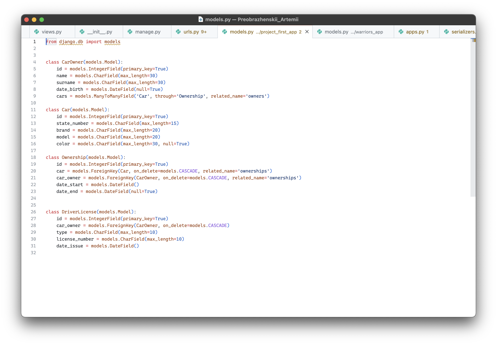
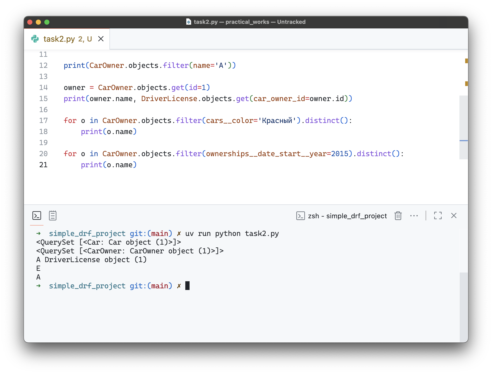

Практическая работа 2.1–2.3
Цель работы
Закрепить навыки работы с Django ORM, включая создание объектов, установку связей между моделями и фильтрацию данных.
Ход выполнения
Постановка задачи
В рамках задания требовалось:
1. Создать несколько автовладельцев и автомобилей, каждому автовладельцу назначить удостоверение и от 1 до 3 автомобилей.
2. Реализовать фильтрацию данных по различным критериям:
- машины определённой марки;
- владельцы с определённым именем;
- получить удостоверение владельца по id;
- владельцы машин определённого цвета;
- владельцы, чей год владения начинается с заданного года.
3. Выполнить агрегирующие и сортировочные запросы:
- дата выдачи самого старшего удостоверения;
- самая поздняя дата владения машиной;
- количество машин у каждого владельца;
- количество машин каждой марки;
- сортировка владельцев по дате выдачи удостоверения с исключением повторов.
Перед выполнением заданий, перепишем схему бд проекта из практики 2.1 на DjangoOrm 
1 задание
В ходе работы сначала были созданы несколько автовладельцев с разными именами и датами рождения. Для каждого автовладельца было создано удостоверение, и им были назначены от одной до трёх автомобилей через промежуточную сущность владения, чтобы корректно отразить связи между владельцем и его транспортными средствами. После этого были созданы автомобили с различными марками, моделями, цветами и годами выпуска, и проверена корректность их привязки к владельцам.

2 задание
На следующем этапе были выполнены запросы на фильтрацию данных. Были получены все машины выбранной марки, найдены владельцы с конкретным именем, а также по id выбранного владельца было получено его удостоверение в виде объекта модели. Кроме того, были выведены все владельцы машин определённого цвета и определены владельцы, чей год владения автомобилем начинается с указанного года. Каждый фильтр проверялся на корректность, чтобы убедиться в точности результатов.

3 задание
После фильтрации данных были реализованы агрегирующие и сортировочные запросы. Сначала была определена дата выдачи самого старшего водительского удостоверения среди всех владельцев, затем вычислена самая поздняя дата владения автомобилем для существующих моделей. Также было подсчитано количество машин у каждого владельца и количество машин каждой марки. В завершение автовладельцы были отсортированы по дате выдачи удостоверения с использованием метода исключения повторов, чтобы вывод был корректным и уникальным.

В результате практической работы были закреплены навыки работы с Django ORM, успешно созданы объекты моделей, установлены связи между ними, выполнена фильтрация и агрегирование данных, а также реализованы сортировки с исключением повторяющихся записей.